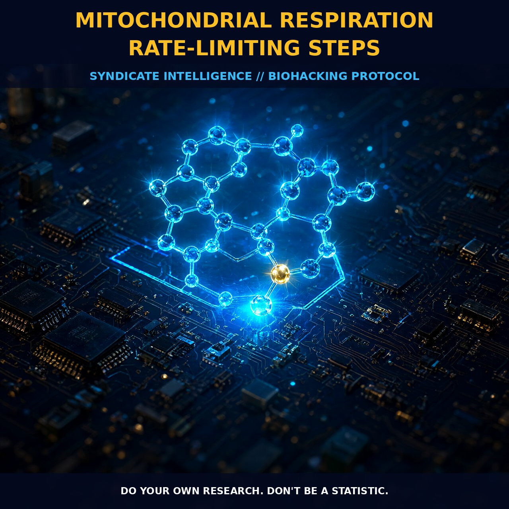

Mitochondrial Respiration Rate-Limiting Steps

MECHANICS
Mitochondrial respiration is not a linear pipeline but a complex network where control is shared among multiple steps rather than dominated by a single rate-limiting choke point. Inhibitor titration studies grounded in the principles of Kacser and Burns reveal that the control over mitochondrial respiration is distributed across the respiratory chain, meaning no single enzyme holds absolute sway. The system operates as a unified whole where the flow of electrons from NADH or succinate to dioxygen is organized to generate a delocalized transmembrane electrochemical gradient of protons, which serves as the common energetic link between respiration and the phosphorylation of ADP in ATPase. This chemiosmotic structure ensures that changes in one part of the chain, such as the lateral diffusion of redox components in the inner mitochondrial membrane, do not necessarily disrupt the overall efficiency of energy transduction.
The regulation of this respiratory flux is intimately tied to the creatine kinase and phosphocreatine system, which acts as both an electrical and hydraulic buffer for oxidative metabolism. Mitochondrial resistance and metabolic capacitance dictate how quickly the cell can respond to sudden energy demands, with the time constant for the decrease in muscle phosphocreatin concentration serving as a critical indicator of functional capacity. When mitochondrial function declines due to aging or pathological conditions, this is closely related to muscular performance, specifically the rate at which phosphocreatin recovers post-exercise. The system maintains cellular bioenergetics by regulating the ATP to ADP ratio, ensuring that motor proteins, ion pumping, and cytoskeletal rearrangement have immediate access to high-energy phosphate bonds without waiting for de novo synthesis.
BIOLOGICAL LEVERAGE
Optimizing mitochondrial efficiency allows you to modulate the balance between oxidative phosphorylation and glycolysis, effectively managing how your cells process fuel under varying loads. In states of elevated cytosolic NADH, such as during anaerobic glycolysis or ischemia, mitochondria can activate a non-energy-linked pathway where electrons flow along all sections of the respiratory chain, bypassing some of the proton-pumping sites to maintain redox balance. This flexibility is crucial because it prevents the accumulation of reactive oxygen species that can damage mitochondrial DNA when defense systems are worn down by chronic alterations or environmental stressors. By enhancing the content and activity of Coenzyme Q10 and alpha-tocopherol in synaptic and non-synaptic mitochondria, you support the electron transfer in the ubiquinone region, which is sensitive to fluidity changes in the inner membrane and directly influences the rate of ATP production.
The aerobic energy system represents a massive amplification of cellular power, capable of increasing oxygen utilization ten to fifteen times above resting values during exercise, driven by the integrated cascades of glycolysis, pyruvate oxidation, and the citric acid cycle. Elite endurance capacity demonstrates that energy metabolism in exercising muscle can rise over a hundredfold compared to rest, relying on the continuous regeneration of ATP through oxidative phosphorylation. This high-capacity system is not static; it adapts to metabolic demands by altering the kinetics of oxygen uptake and the recovery time constant of phosphocreatin, which serves as a dynamic capacitor for cellular thermokinetics. Maintaining the integrity of this bioenergetic network ensures that tissues with the highest energy concentrations, like the brain and heart, remain resilient against the oxidative stress that accumulates as a byproduct of high-throughput respiration.
TACTICAL IMPLEMENTATION
To leverage these mechanisms, supplementing with compounds that directly support the mitochondrial respiratory chain can enhance electron transport and reduce oxidative burden. Coenzyme Q10 is central to this process, acting as a mobile electron carrier within the inner mitochondrial membrane, and its endogenous concentration is critical for patients with mitochondrial myopathies or cardiomyopathy. Alpha-tocopherol works in synergy with CoQ10 to protect the lipid phase of the membrane from autoxidation, particularly during states of high metabolic flux where reactive oxygen species production spikes. While specific molecular weights and binding affinities are well-documented, human dosing protocols for these lipophilic antioxidants are established through their ability to increase mitochondrial content and support the rejection of transplanted hearts by stabilizing respiratory chain function.
Creatine monohydrate supplementation offers a distinct lever for optimizing the creatine kinase system, with protocols often utilizing twenty grams per day to rapidly augment total creatine stores. This augmentation increases muscle metabolic capacitance, resulting in longer time constants for phosphocreatin kinetics and a slower oxygen uptake response, which optimizes the cellular thermokinetics of energy transduction. By maintaining higher baseline levels of phosphocreatin, you ensure a more stable ATP to ADP ratio during periods of high demand, supporting sustained motor performance and faster post-exercise recovery. Combining creatine with CoQ10 provides a dual approach: one addresses the immediate buffering of phosphate bonds, while the other enhances the electron flow that regenerates those bonds, creating a robust bioenergetic foundation for daily optimization and long-term mitochondrial health.
Do your own research. Don't be a statistic.
Prostar Life Hack
By maintaining higher baseline levels of phosphocreatin, you ensure a more stable ATP to ADP ratio during periods of high demand, supporting sustained motor performance and faster post-exercise recovery.
[ AUTHOR: LEAD TECHNICAL RESEARCHER ]